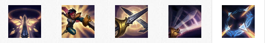

背景故事
“我以荣誉之名前来杀你。即使你毫无荣誉可言，也一样得死。”
菲奥娜是瓦洛兰的决斗家中最为可怕的一个，她的名声来自她顽强的意志和高傲的自尊，以及与这些相称的剑技。她出生在德玛西亚的劳伦特家族，一个曾经显赫的家族，但她父亲的舞弊行为损害了家族的名声。菲奥娜前所未有地对她的父亲发起决斗挑战，并在获胜后，取得了劳伦特家族的控制权。她公然藐视德玛西亚的规章制度，准备通过一场场的决斗来恢复家族的名声和自豪感。
技能介绍
决斗之舞(被动)
菲奥娜对附近一名敌方英雄发起挑战，并发现其身上的一处破绽。如果她成功击中该破绽，她会得到额外奖励，并会发现下一处破绽。
破空斩(主动)
快捷键：Q菲奥娜向一个方向进行突刺并斩击一个附近的敌人，造成65/75/85/95/105(+0.6)物理伤害并施加攻击特效。
这个技能会优先攻击带有破绽并在击杀距离内的敌人。
如果这个技能命中了一个敌人，那么就会返还60%的冷却时间。
- 伤害：65/75/85/95/105
- 冷却时间：16/14/12/10/8
劳伦特心眼刀
快捷键：W菲奥娜对即将到来的所有伤害和控制效果进行招架，持续0.75秒，然后朝目标方向进行刺击。
刺击会对命中的第一个敌方英雄造成90/130/170/210/250(+)魔法伤害，并使目标的攻击速度和移动速度减少50%，持续1.5秒。如果菲奥娜招架掉一个禁锢类的限制效果，那么她会对目标造成晕眩效果而不是减速效果。
- 伤害：90/130/170/210/250
- 冷却时间：0
夺命连刺
快捷键：E菲奥娜的下两次攻击提升50%攻击速度。 第一次攻击无法产生暴击，但会施加一个40/45/50/55/60%减速效果，持续1秒。第二次攻击必定会产生暴击，造成%伤害()。
- 减速幅度：40/45/50/55/60%
- 冷却时间：15/13/11/9/7
- 法力消耗：40/45/50/55/60
无双挑战
快捷键：R菲奥娜标出目标英雄身上的全部四处破绽，最多可造成%最大生命值的真实伤害。此外，菲奥娜在敌方英雄附近时，会获得【决斗之舞】提供的移动速度加成(%)。如果菲奥娜在8秒内命中了全部四处破绽，或者在目标死前至少命中一处，那么菲奥娜和范围内的友军就会每秒回复80/110/140(+)生命值，持续5秒。
- 冷却时间：110/90/70
- 决斗移动速度加成：30/40/50%
- 每秒治疗量：80/110/140
使用技巧
- 在【决斗之舞】的帮助下，菲奥娜特别擅长进行快速换血。攻击破绽后的移动速度加成，既能用来毫发无伤地逃离，又能用来发起下次攻击。
- 菲奥娜的【无双挑战】非常有用，甚至能帮她解决那些最为坚挺的对手，并在成功后提供恢复效果，所以，不要在攻击敌人的前排英雄时犹豫不决。
- 敌人使用无双剑姬
- 【决斗之舞】会显示出菲奥娜将要尝试对你进行攻击的地方，所以准备好在她尝试时教训她。
- 在对菲奥娜施放禁锢类技能时要特别小心。如果她的【劳伦特心眼刀】还在可用状态，那么她就能将这类技能的效果反过来对付你。